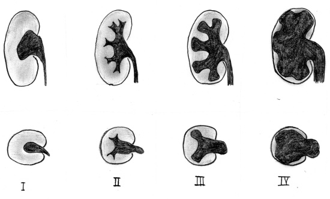

You are here: Urology Textbook > Signs and symptoms > Hydronephrosis
Hydronephrosis and Upper Urinary Tract Obstruction
Definition of Hydronephrosis
Hydronephrosis is caused by an obstruction of the urine flow from the kidney. Hydronephrosis means literally "water inside the kidney" and refers to the distension and dilation of the pyelocalyceal system. For classification see section ureter ultrasonography.
Differential diagnosis of Hydronephrosis
Urinary retention:
- Prostate diseases: benign prostatic hyperplasia, prostate cancer, prostatic cyst.
- Bladder diseases: bladder tumors, bladder stones, bladder neck sclerosis, detrusor sphincter dyssynergia (DSD).
- Diseases of the urethra: urethral stricture, carcinoma, foreign bodies, phimosis, urethral valves.
- Medication, alcohol, postoperative urinary retention, diabetes mellitus.
Ureter diseases causing hydronephrosis (intrinsic causes):
- Ureteral stone
- Ureteral clot due to hematuria
- Congenital diseases: ureteropelvic-junction obstruction, vesicoureteral reflux, megaureter, ureterocele, megacalicosis, calyceal diverticula.
- Benign ureteral stricture: after ureteral stone therapy, infection (tuberculosis, schistosomiasis), idiopathic.
- Ureteral cancer
Iatrogenic Causes of Hydronephrosis:
- Intraoperative injuries: ureteroscopy, rectal surgery, hysterectomy, vascular surgery. The spectrum of injury ranges from ischemic strictures due to coagulation to complete transection and ligature.
- Irradiation, radiation injury of the bladder trigone
Hydronephrosis due to Vascular Diseases:
- Aortic aneurysm
- Renal artery aneurysm
- Aneurysm of the iliac vessels
- Retrocaval ureter or retroiliac ureter
- Postpartal ovarian vein thrombophlebitis: 1/3000 pregnancies, may cause hydronephrosis.
Gynecological Diseases Causing Hydronephrosis:
- During pregnancy, the enlarged uterus can compress the ureter (right side more often than left side) and may cause pyelonephritis during pregnancy.
- Endometriosis: recurrent flank pain, dysuria, hematuria
- Extra-uterine pregnancy
- Tuboovarial abscess
- Pelvic floor insufficiency with organ prolapse
- Tumors: cervical cancer, ovarian cysts, ovarian cancer, uterine leiomyoma ...
Hydronephrosis caused by Diseases of the Retroperitoneum:
- Retroperitoneal tumors: lymphoma, retroperitoneal sarcoma, retroperitoneal germ cell tumors.
- Lymph node or distant metastases: prostate cancer, cervical cancer, breast cancer, colon cancer, stomach cancer, bladder cancer, ....
- Retroperitoneal fibrosis
- Pelvic lipomatosis : rare disease with pelvic fat accumulation and cranial displacement of bladder and ureters.
Diagnostic Work-Up in Hydronephrosis
|  |
- Laboratory tests: urine analysis (sediment microscopy), serum electrolytes and creatinine.
- Sonography of kidney and ureter (see above).
- Intravenous urography or computed tomography of the abdomen (with or without contrast media) or MRI abdomen.
- Renal scintigraphy: to differentiate between relevant obstruction or dilatation of the calyceal system without obstruction. Renal scintigraphy can determine renal function and the need for surgical interventions.
- Retrograde pyelography and ureterorenoscopy: necessary for diagnosis and treatment of upper urinary tract obstruction (ureteral stenting, ureterotomy).
| Hydronephrosis | Index | Groin lumps |
Index: 1–9 A B C D E F G H I J K L M N O P Q R S T U V W X Y Z
References
- Gleason, P. E.; Kelalis, P. P.; Husmann, D. A. & Kramer, S. A.
- Hydronephrosis in renal ectopia: incidence, etiology and
significance
J Urol, 1994, 151, 1660-1
 Deutsche Version: Differentialdiagnose Harnstau
Deutsche Version: Differentialdiagnose Harnstau